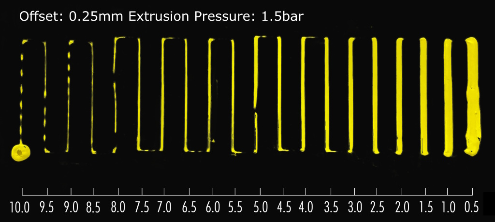
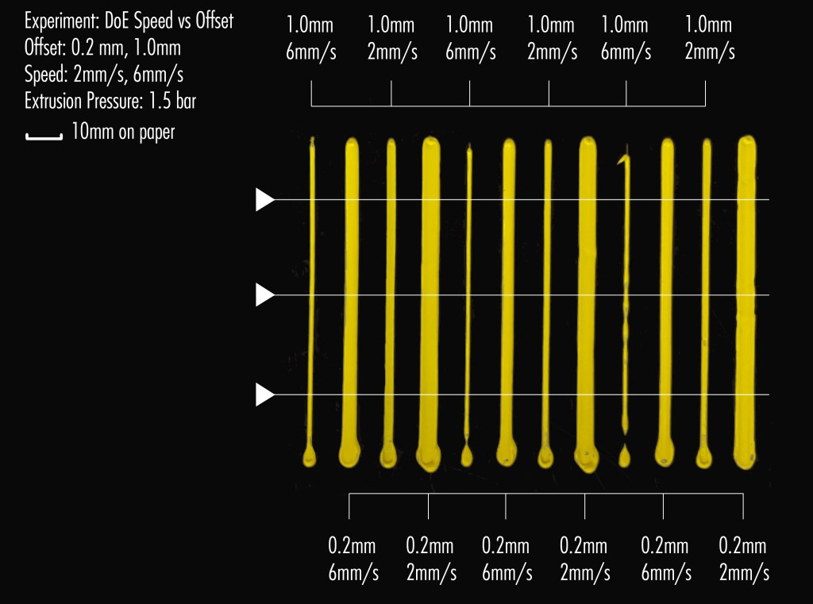
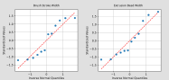
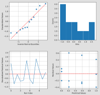

Experimental Design
Full Factorial Designs
The purpose of performing a factorial design of experiment is to build a model that allows you to specify a number of input parameter values, aka factors, and get a good approximation of the expected outputs, aka responses. Instead of trying input combinations by trial and error, it makes sense to perform a series of experiments and built a statistical predictive model. If a desired outcome is required, then it is a matter of inverting the model, using optimization, to obtain the associated control parameters. To construct a DoE model one need to follow the step below.
Parameters
Generally the number of factors is between 2 to 6 because the number of experiments required scales exponentially to the number of parameters. For k factors, 2^k experiments are needed for linear model. But because each experiment is performed several times n, aka replications, the total is n*2^k. The parameters may be quantitative, such as weight, time, length, but they can also be qualitative such as on/off, s/m/l.
Case Studies
Consider the scenario where a calligraphy brush is attached to the robot. The objective is to be able to produce consistent strokes of varying line width by adjusting motion parameters. The same is also be relevant for extruding material using a pneumatic syringe. For simplicity the factors selected are the robot's linear motion Speed and the vertical Offset from the brush/nozzle tip to the surface.

Levels
For simple linear models only two levels are required, a low value (-) and a high value (+), for each factor. Care must be taken for choosing the levels. If the range of values is too small then it may be pointless to build a model because there may be no significant change. If however the range is too big and the underlying shape is non-linear then the model will produce bogus results.
Case Studies
Initial testing with the brush allows estimating the levels for the factors, namely between 5mm/s to 50mm/s for the Speed, and 1mm to 5mm for the Offset factor. Note that with 1mm the brush barely touches the paper, while with 5mm there is significant downward pressure on the paper.
| Factor | Coded | ↔ | Actual | Coded | ↔ | Actual |
|---|---|---|---|---|---|---|
| Speed | -1 | ↔ | 5 mm/s | +1 | ↔ | 50 mm/s |
| Offset | -1 | ↔ | 1 mm | +1 | ↔ | 5 mm |
The extrusion process requires careful level selection because moving too slow causes over-extrusion while moving too fast causes under-extrusion. Thus an experiment with varying the speed was conducted with values between 0.5mm/s to 10mm/s.

| Factor | Coded | ↔ | Actual | Coded | ↔ | Actual |
|---|---|---|---|---|---|---|
| Speed | -1 | ↔ | 1 mm/s | +1 | ↔ | 6 mm/s |
| Offset | -1 | ↔ | 0.2 mm | +1 | ↔ | 2 mm |
Replications
Each experiment is performed a few times to pick up the variations in the statistic. Perhaps at minimum 3 replications keeping the same inputs is ok. Use a larger number if higher variability control is needed. Use a lower number if the parameters are too many.
Case Studies
Since this is 2 factor experiment we can run 3 to 5 replications per combination of factors. Using 3 requires only 12 experiments in total. Since the robot will perform the operations, the replications can be higher however consider the effort required in measurement.
Measurements
Try to measure values from the experiment results consistently and consider measuring more than one output metric. Using more than one output means that you will develop several models for each response.
Case Studies
The obvious thing to measure is the relationship between Speed and Offset to stroke Width. This can be done using calipers or easier with a photography or a scanner. Additionally, we can observe that the same control factors affect the intensity as well as the length of the stroke. These can also be measured and used to build additional models.

In both cases instead of measuring the Width at one location, it is also reasonable to do so at a few intervals. Three measurements were taken and the mean values used.

Experiments
Create the experiment matrix to guide you using either the python notebook or excel spreadsheet provided. Run the experiments randomly, not serially. Consider the setup initialization because it may introduce artifacts. Write down the measurements and take pictures. It is good to have a reference for double checking later.
Case Studies
The matrix for recording the measurements for a 2^3 model is first generated. The experiments need to follow the Order column and the values tabulated in the Repl cells. Note that a new table is required for each measurement.
Brush Stroke Width
| Index | Order | Speed | Offset | Repl1 | Repl2 | Repl3 |
|---|---|---|---|---|---|---|
| 0 | 3 | 5.0 | 1.0 | 1.253 | 1.550 | 0.900 |
| 1 | 2 | 50.0 | 1.0 | 1.053 | 1.458 | 0.944 |
| 2 | 0 | 5.0 | 5.0 | 3.669 | 3.504 | 3.164 |
| 3 | 1 | 50.0 | 5.0 | 2.601 | 3.660 | 2.640 |
Extrusion Bead Width
| Index | Order | Speed | Offset | Repl1 | Repl2 | Repl3 |
|---|---|---|---|---|---|---|
| 0 | 3 | 0.2 | 2.0 | 5.491 | 4.943 | 5.198 |
| 1 | 2 | 0.2 | 6.0 | 3.478 | 3.504 | 4.036 |
| 2 | 0 | 1.0 | 2.0 | 2.140 | 2.020 | 2.693 |
| 3 | 1 | 1.0 | 6.0 | 1.600 | 1.365 | 1.545 |
After tabulating the measured data it is a good practice to perform a validation to check for normality. Below are the Q-Q plots for both case studies. What we are looking at here is the line fitted to the data points. Theoretically it must be y = x, thus a=1.0 and b=0.0. The python notebook reports the R^2 and p-Value of the fit. This should not be confused with the Shapiro-Wilk test where we expect p-Value > 0.05. In both cases the results look reasonable.

Construction
The python notebook and excel spreadsheet provided construct a linear model based on the data recorded. First verify that the recorded measurements are normally distributed. Then look at the coefficient of determinations and significance values of each factor and combinations thereof. You may zero the coefficients of those that are not significant to obtain a smaller model.
Case Studies
Building the model is straight forward. The result is a series of coefficients that can be used for evaluating the model in the range of [-1, 1] for each factor. For a linear two factor model the equation is f( a, b ) = c0 + c1 * a + c2 * b + c3 * a * b , where a, b are the coded factor values and c0, c1, c2, c3 are the model's coefficients fitted. Note that c0 is always the mean value of the experimental data. Conversion between coded values [-1, 1] and actual values [min, max] can be done with linear interpolation.
Stroke Width Bead Width
y = 2.1997 y = 3.1678
- 0.1403 * a - 0.5797 * a
+ 1.0067 * b - 1.2739 * b
- 0.0990 * ab + 0.1892 * ab
where a = Speed in [-1, 1]
b = Offset in [-1, 1]
y = Width in mm
Validation
Validate the model using the statistics generated and the Q-Q, residual vs. run, histogram and predicted vs. residuals plots. Additionally, you can validate the model by choosing an input point, such as [0, 0] and run an experiment to verify that the predicted and measured responses match.

Case Studies
The python notebook contains data for various measurements, some of which work and some don't. For instance, in the model for the Width of the stroke, we can see that the significance of the Speed factor and its combination with Offset is rather low. Offset seems to dominate the results.
'R^2 reg': 91.2%
'R^2 adj': 87.9%
p-Values
a : 0.11537
b : 0.00000
ab : 0.24804
where a = Speed
b = Offset
The model for the stroke's Length shows irregularities in the input data distribution which then manifests it self in the R^2 coefficient. This is likely because of poor robot calibration.
'R^2 reg': 61.9%
'R^2 adj': 47.5%
p-Values
a : 0.46759
b : 0.00106
ab : 0.52111
where a = Speed
b = Offset
The model for the extrusion bead's Width was conducted carefully and this is reflected in the results. Here both Speed and Offset are significant but also their interaction.
'R^2 reg': 97.4%
'R^2 adj': 96.4%
p-Values
a : 0.00001
b : 0.00000
ab : 0.01108
where a = Speed
b = Offset
Application
Once the model is computed and validated we can use it as a regular python function. The model produced by fitting works with coded values in the [-1.0, 1.0] range. Using actual values can be achieved using normalization as seen below.
def BeadWidthCoded( speed, offset ):
return ( 3.1678 -
0.5797 * speed -
1.2739 * offset +
0.1892 * speed * offset )
def Normalize( value, vmin, vmax ):
normalized = ( value - vmin ) / ( vmax - vmin )
return normalized * 2 - 1
def BeadWidthActual( speed, offset ):
return BeadWidthCoded(
Normalize( speed, 1.0, 6.0 ),
Normalize( offset, 0.2, 2.0 ) )
print( BeadWidthCoded ( -1.0, -1.0 ) )
print( BeadWidthActual( 1.0, 0.2 ) )
Visualization
The model can be also visualized using either matplotlib, plotly, as seen below, or a regular Excel graph. Selecting a pair of input parameters produces the expected bead width interactively.
Optimization
While the model is useful as is, it is often the case that we want to derive the process settings that achieve a specific goal. This model inversion process can be approached using optimization. The minimum or maximum model value can be found using scipy. Nevertheless, such values can be directly inspected from the graphs.
import numpy as np
from scipy.optimize import minimize
xo = np.zeros( Factors )
result = minimize( model, xo,
bounds=[(-1, 1)] * Factors, method='L-BFGS-B' )
print( f'Factors: {result.x} -> Minimum: {result.fun:.3f}' )
Factors: [1. 1.] -> Minimum: 1.503
To obtain specific target values, such as 2.0mm bead width, we need to create an objective function as seen below. The function computes an error value that increases in a parabolic sense away from the target. Thus the desired value is situated at the minimum of the error function.
def TargetValue( x ):
return ( model( x ) - 2.0 ) ** 2
xo = np.zeros( Factors )
result = minimize( TargetValue, xo,
bounds=[(-1, 1)] * Factors, method='L-BFGS-B' )
print( f'Factors: {result.x} -> Error: {result.fun:.3f}' )
Factors: [0.70204336 0.66670002] -> Error: 0.000